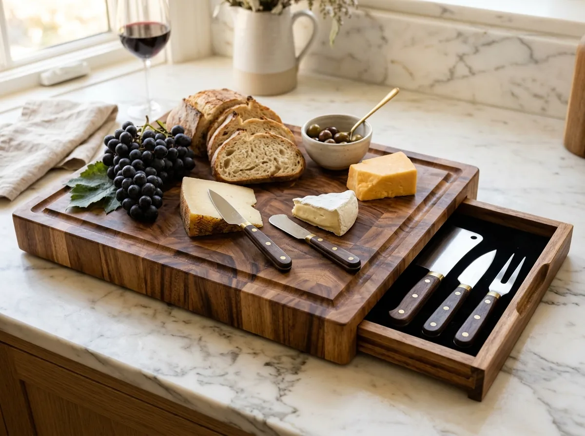

AA-TY-400 · Cat 40
Carved Acanthus Leaf Baroque Vanity Tray
Handcrafted Hollywood Regency tabletop craft accent engineered for Anthropologie, HomeGoods wholesale programs.
$9.50 – $12.50 FOB Mundra · per unit · MOQ 100 Pcs
| Material & construction | Intricately carved relief scroll rim in antique gold/distressed white Mango wood |
|---|---|
| Dimensions | 15" x 10" x 2" / 38 x 25 x 5 cm |
| Carton volume | 0.009 CBM / unit |
| Minimum order | 100 Pcs |
| Lead time | 45–60 Days (FOB Mundra) |
| Western retail benchmark | $48 – $68 |
| Style | Hollywood Regency |
| Indicative HS heading | 4419.19 — Wooden kitchenware / tableware |
| Typical buyers | Anthropologie, HomeGoods |
Indicative HS heading only — your customs broker confirms final classification. Kiln-dried 8–10% moisture, ISPM-15 dunnage, VRIKSH / Lacey / EUDR paperwork on request.